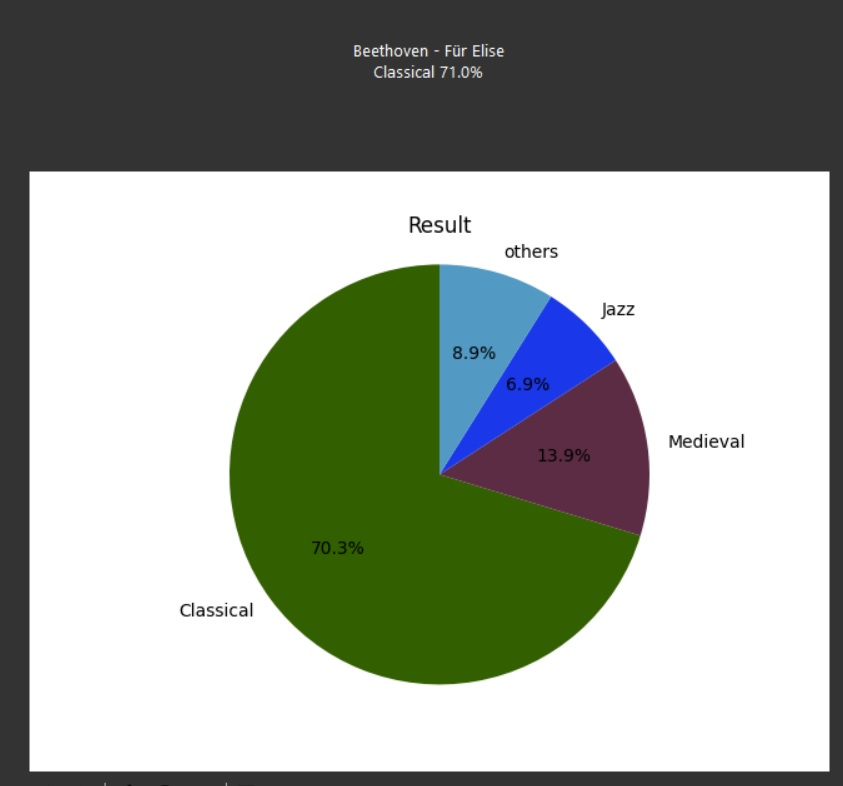

Introduction
Le genre musical est un ensemble de morceaux de musique, de formes musicales possédant plusieurs caractéristiques communes. Notre objectif est de développer un modèle d'intelligence artificielle capable de reconnaître le genre d'une musique.
Notre approche
Nous allons entraîner un réseau de neurones à reconnaître les caractéristiques des différents genres musicaux, en utilisant une grande base de données de morceaux de musique de différents genres. Nous allons ensuite tester la précision de notre modèle en lui faisant écouter des morceaux qu'il n'a jamais entendus auparavant.
Exemple de morceau
Notre projet a fait l'objet d'une intervention lors du west data festival, ainsi qu'une mention dans le journal Ouest France https://www.ouest-france.fr/pays-de-la-loire/laval-53000/en-mayenne-1-500-inscrits-a-la-5e-edition-du-west-data-festival-05479b70-c291-11ed-88ce-5eefbb0a1a52